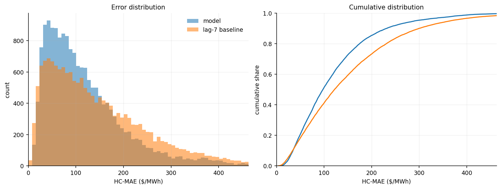
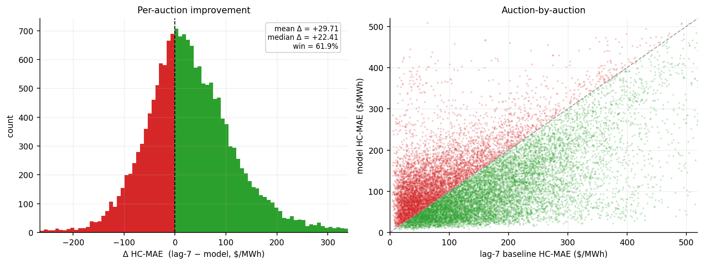
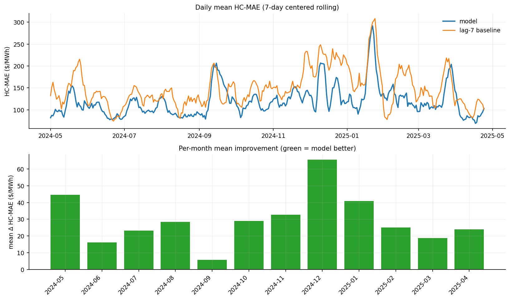
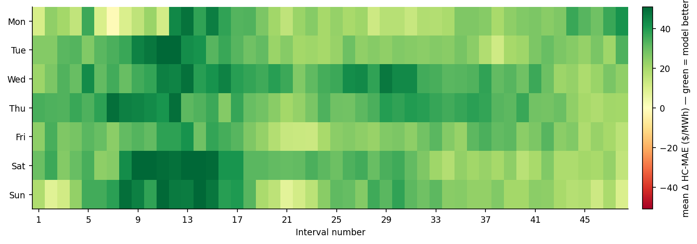
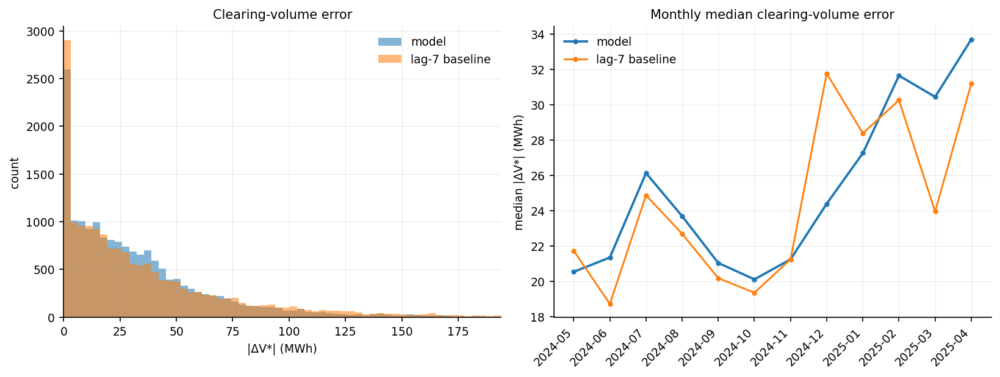
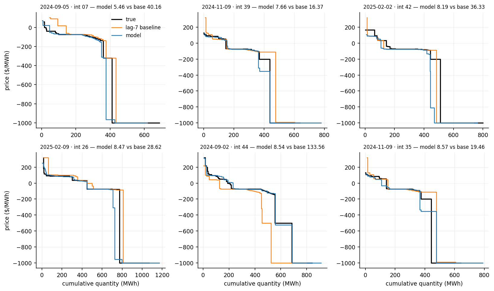
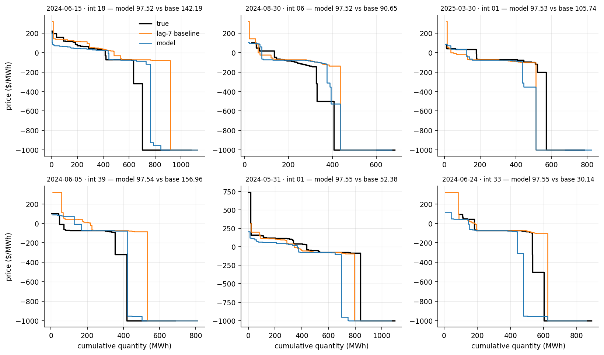
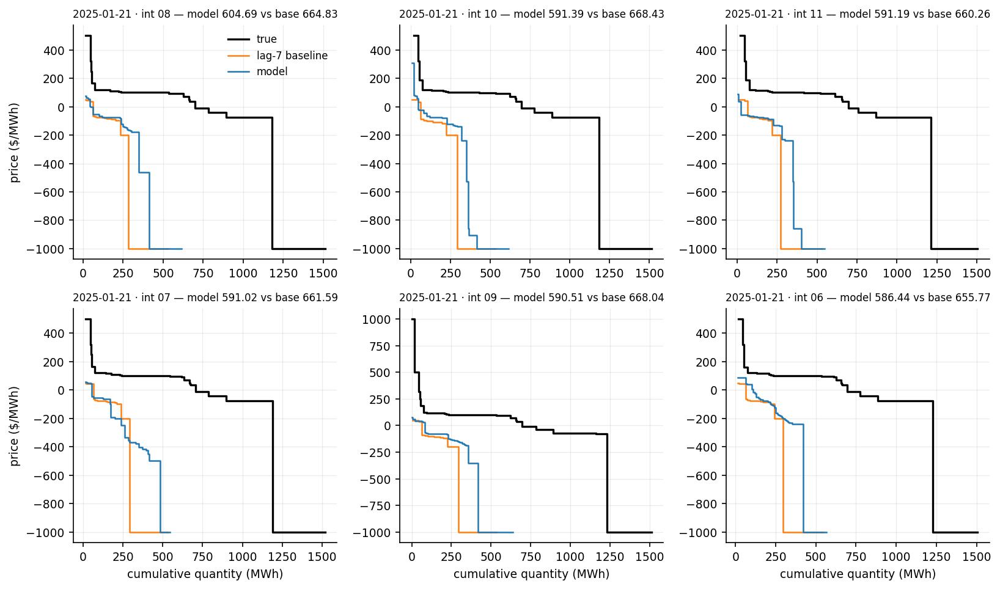

7-day-ahead · test 2024-05-01 → 2025-04-24 · 17,232 auctions · reference: lag-7 baseline
| This model | lag-7 baseline | |
|---|---|---|
| Mean HC-MAE ($/MWh) | 119.26 | 148.97 |
| Median HC-MAE ($/MWh) | 97.52 | 121.92 |
| Win % vs lag-7 | 61.9% | - |
| Mean |ΔV*| (MWh) | 33.66 | 38.02 |
| Median |ΔV*| (MWh) | 24.30 | 23.72 |
| Mean |ΔP*| ($/MWh) | 34.49 | 30.29 |
| Median |ΔP*| ($/MWh) | 9.11 | 5.75 |




The predicted demand curve is crossed with the true supply curve, and the error is how far this moves the clearing point (V*, P*).
| This model | lag-7 baseline | |
|---|---|---|
| Mean |ΔV*| (MWh) | 33.66 | 38.02 |
| Median |ΔV*| (MWh) | 24.30 | 23.72 |
| Win % on |ΔV*| | 42.5% | - |
| Mean |ΔP*| ($/MWh) | 34.49 | 30.29 |
| Median |ΔP*| ($/MWh) | 9.11 | 5.75 |
A few price-floor auctions make the mean of |ΔP*| large, so the median is the summary.



